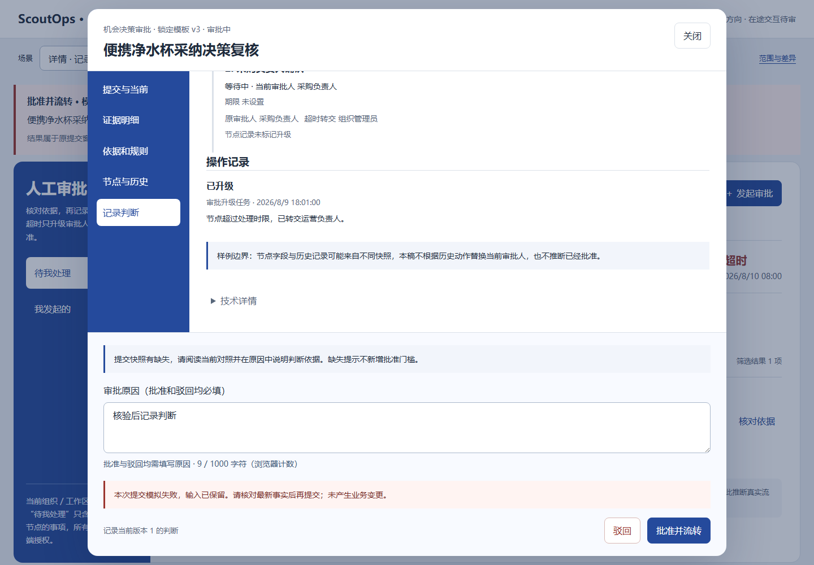
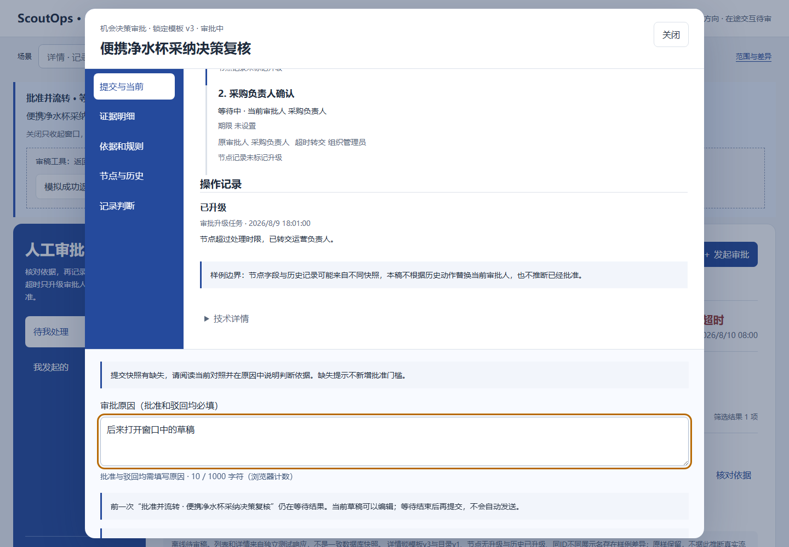
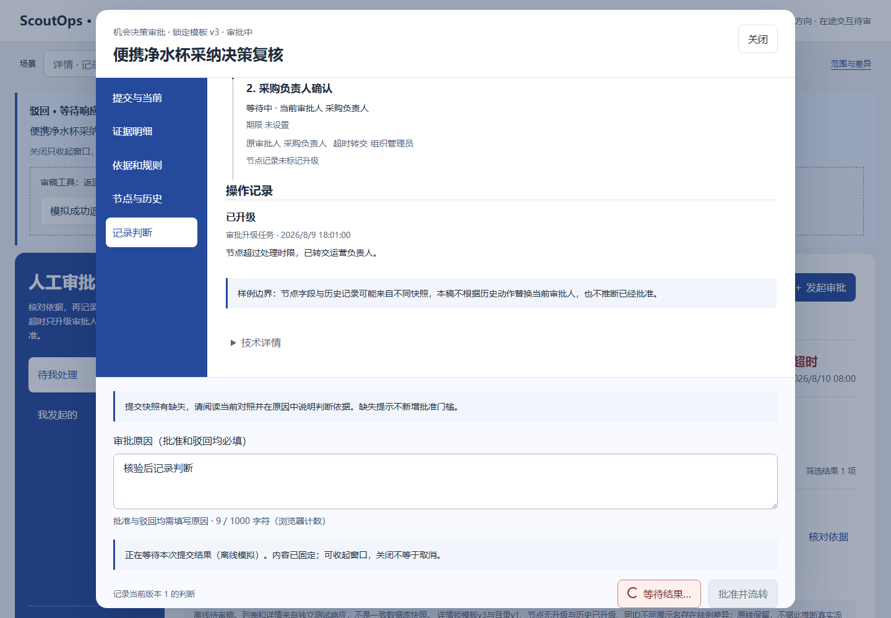
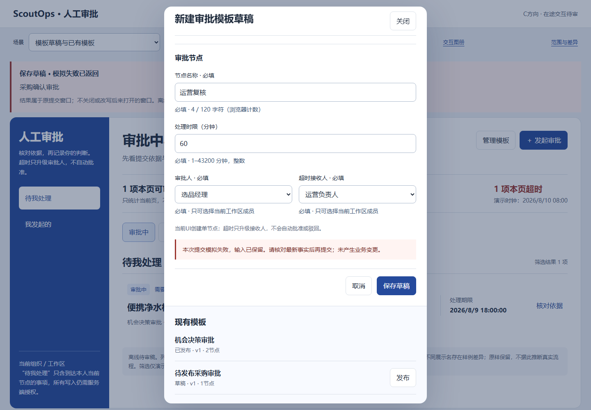
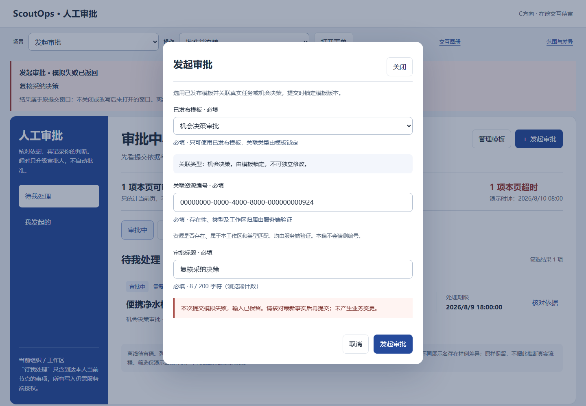
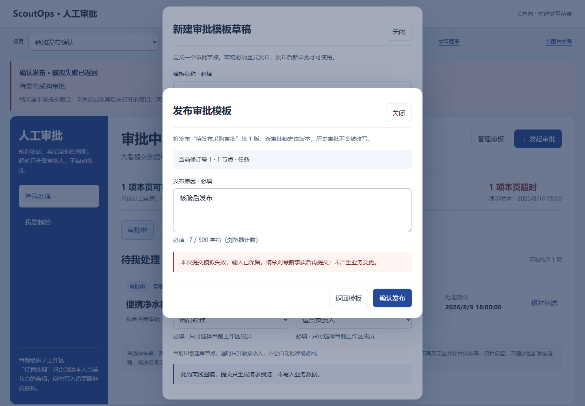
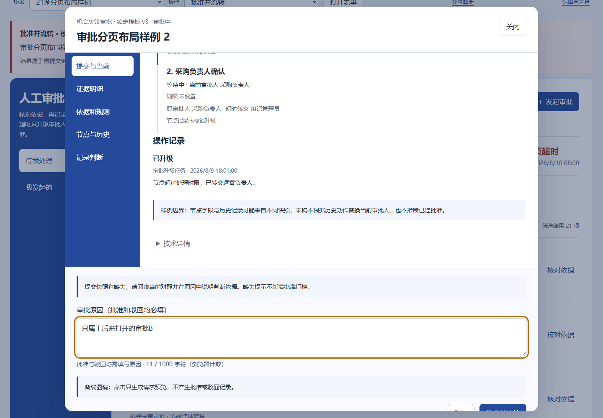
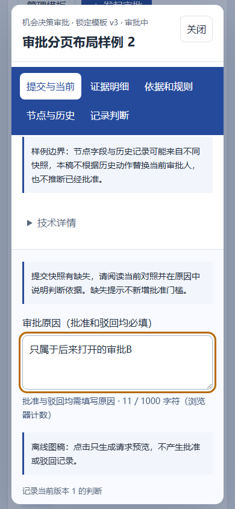

P25 提交中关闭与迟到结果 · 待审核
54张双端图：五类操作等待、原窗失败/模拟成功、关闭后等待、重开等待，及旧A结果返回时的新B。模拟响应不代表真实审批成功。
交互稿 · 范围与差异
approve-pending · 1440
approve-owner-failure · 1440

approve-owner-success · 1440
approve-closed-pending · 1440
approve-reopened-pending · 1440

reject-pending · 1440

reject-owner-failure · 1440
reject-owner-success · 1440
reject-closed-pending · 1440
reject-reopened-pending · 1440
template-pending · 1440
template-owner-failure · 1440

template-owner-success · 1440
template-closed-pending · 1440
template-reopened-pending · 1440
request-pending · 1440
request-owner-failure · 1440

request-owner-success · 1440
request-closed-pending · 1440
request-reopened-pending · 1440
publish-pending · 1440
publish-owner-failure · 1440

publish-owner-success · 1440
publish-closed-pending · 1440
publish-reopened-pending · 1440
old-A-success-current-B · 1440
old-A-failure-current-B · 1440

approve-pending · 390
approve-owner-failure · 390
approve-owner-success · 390
approve-closed-pending · 390
approve-reopened-pending · 390
reject-pending · 390
reject-owner-failure · 390
reject-owner-success · 390
reject-closed-pending · 390
reject-reopened-pending · 390
template-pending · 390
template-owner-failure · 390
template-owner-success · 390
template-closed-pending · 390
template-reopened-pending · 390
request-pending · 390
request-owner-failure · 390
request-owner-success · 390
request-closed-pending · 390
request-reopened-pending · 390
publish-pending · 390
publish-owner-failure · 390
publish-owner-success · 390
publish-closed-pending · 390
publish-reopened-pending · 390
old-A-success-current-B · 390

old-A-failure-current-B · 390